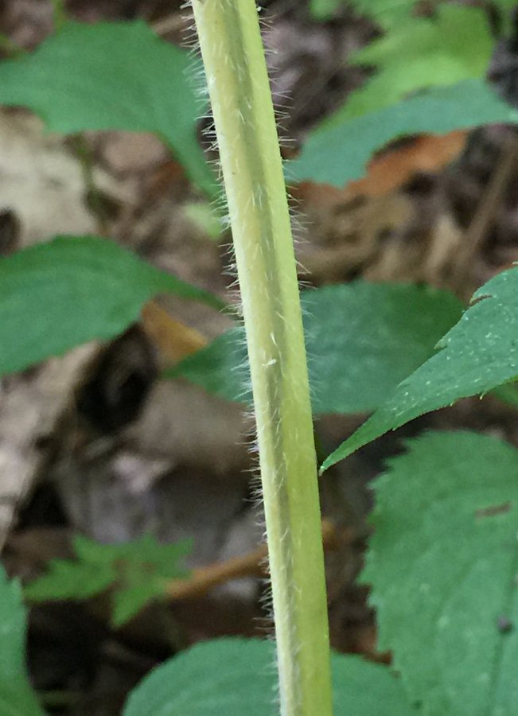
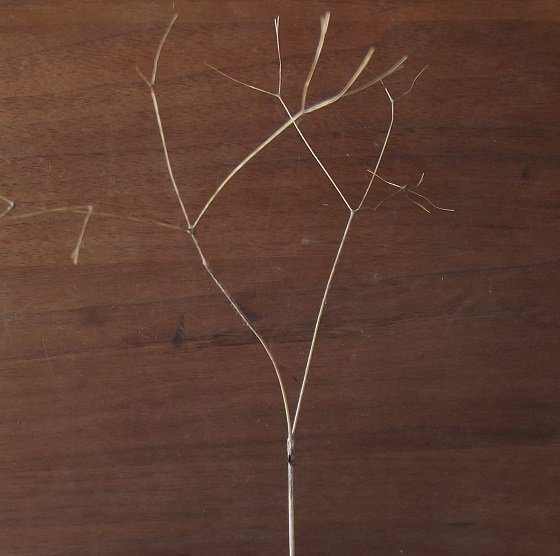
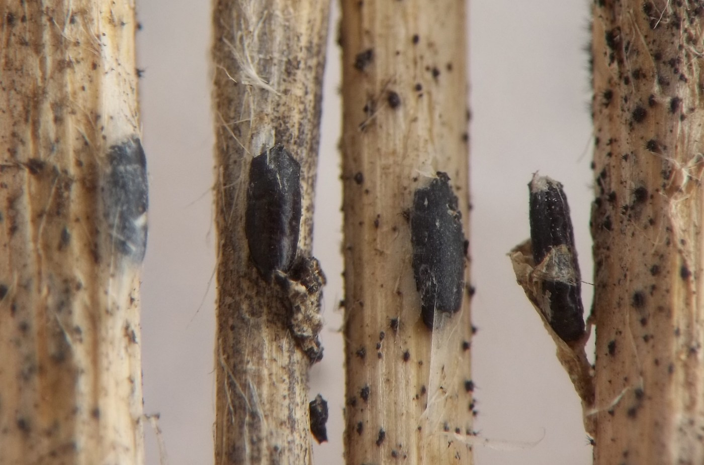
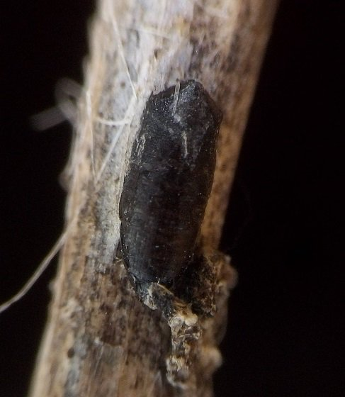
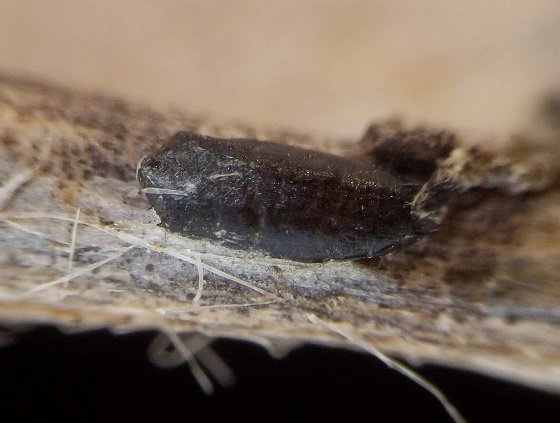
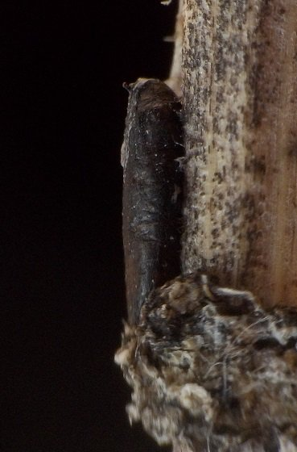
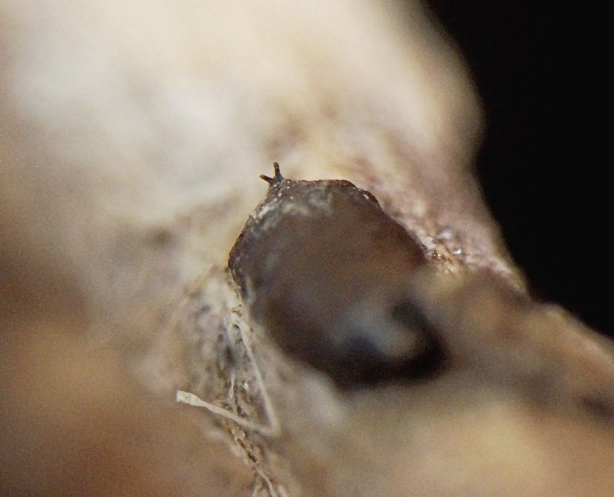
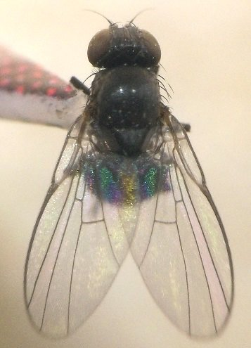
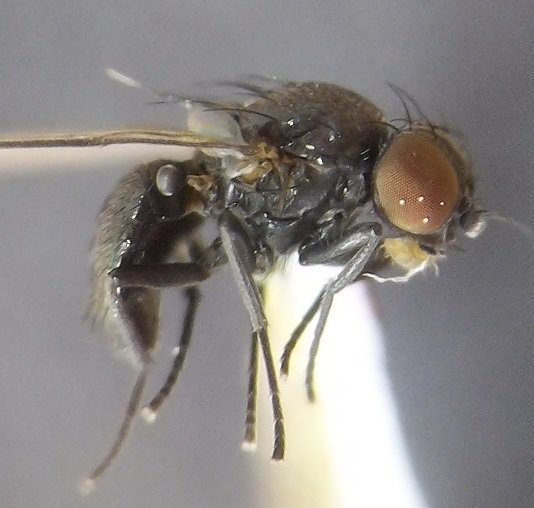
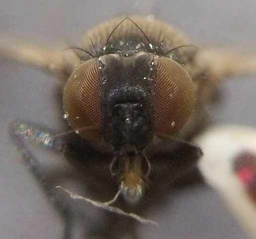

Stem miner (Diptera: Agromyzidae) in Osmorhiza
| Record no.: | 0353 |
|---|---|
| Feeding guild: | Stem miner |
| Taxonomy: | Diptera: Agromyzidae: Ophiomyia osmorhizae |
| Stages observed: | trace, larva, puparium, adult |
| Distribution observed: | IA |
| Hosts in Osmorhiza: | undetermined O. sp., O. claytonii or O. longistylis (sweet cicely, aniseroot) |
I first found black puparia of this stem miner overwintering on dead stems of the host in winter 2016-2017. Adults emerged from these puparia in spring 2017.
In early August 2023, I photographed an active stem mine on a fruiting plant that was beginning to senesce. The larva had mined upward for some distance, creating a rather broad, grayish linear mine on the yellowing stem, before making a U-turn and mining a short distance downward until it reached the position at which I encountered it. Its body, though located just under the translucent stem epidermis, was the same color as the stem tissue and thus difficult to discern in the field, save for its black cephalopharyngeal skeleton, which could be seen moving back and forth as the larva fed.
The species was described in Eiseman and Lonsdale (2019).

 Prev
Prev
{kind=link}
{kind=link}

{kind=link}

{kind=link}

{kind=link}

{kind=link}

{kind=link}

{kind=link}

{kind=link}

{kind=link}

- Eiseman, C.S. and O. Lonsdale. 2019. New state and host records for Agromyzidae (Diptera) in the United States, with the description of ten new species. Zootaxa 4661: 1-39.[return to in-text citation]
Page created: March 25, 2026. Last update: none